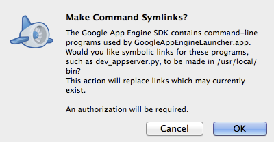
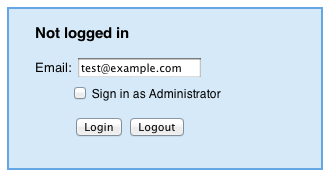
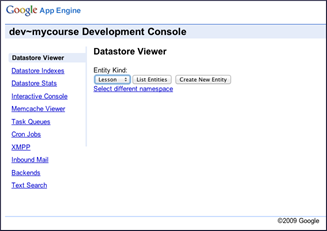

Si no está familiarizado con Google App Engine (GAE), pero sabe algo acerca de la computación en nube, lea ¿Qué es Google App Engine? Si usted es completamente nuevo a la computación en nube, así, una introducción más fácil a la nube y puede GAE se encuentran en esta Introducción a Google App Engine.
Usted no necesita ser un experto para trabajar con GAE desarrollador del curso. Sólo hay algunas cosas que usted debe conocer durante el desarrollo del curso. Gran parte de esto se discute en otras páginas. Lo resumiré aquí.
Esta página describe el uso de GAE en el desarrollo. Para obtener información sobre cómo trabajar con ella para desplegar su curso y modificarlo después de la implementación, consulte Despliegue su aplicación.
Nota: Algunas de estas páginas se refieren a un "shell o símbolo del sistema". Si no estás seguro de lo que eso significa, consulte ¿Qué es un "shell o símbolo del sistema"?
El uso de GAE para su curso puede incurrir en algunos costos. Actualmente, cada aplicación GAE puede consumir un cierto nivel de recursos informáticos de libre, controlado por un conjunto de límites. Si necesita recursos por encima de estos límites, podrás cambiar a una aplicación de pago para establecer un presupuesto diario recurso. Cuando se convierte a una aplicación de pago que pasará un mínimo de $ 2.10/week.Esto le permite adquirir recursos adicionales cuando sea necesario.
Es difícil predecir de antemano los costos para su curso, como GAE tiene una estructura de costos muy complejo (ver Recursos facturación y elaboración de presupuestos y cuotas para los detalles). Es probable que cualquier curso de tamaño significativo incurrirá en costes. Para efectos comparativos ásperos, el curso y los aranceles Buscando a cargo de Google incurrido en cargos facturables de aproximadamente $ 20/día para apoyar un curso de matrícula de 150.000 estudiantes. Hemos hecho pruebas que sugieren que el código podría apoyar un curso de hasta 300 estudiantes de forma gratuita. Esta cifra no es una garantía y depende de un conjunto bastante complejo de variables y patrones de uso, tales como matrícula, compromiso, deserción, cambios de código, y así sucesivamente.
Recuerde que usted puede comenzar el desarrollo y las pruebas de su curso de forma gratuita, utilizando el servidor de desarrollo descargado (desde el Google App Engine SDK) y el cupo libre inicialmente proporcionada por GAE para las aplicaciones implementadas. Este contingente libre es bastante limitado y es poco probable que apoyen una matrícula curso de tamaño considerable.
También tenga en cuenta que usted puede controlar su costo mediante el establecimiento de un presupuesto máximo diario, que será la culminación de sus costos (y su cuota) por día. Sin embargo, esto puede conducir a su curso no esté disponible para el resto de cualquier día en que se exceden su presupuesto.
Asegúrate de que tienes Python 2.7 en su sistema. Para saber si lo haces...
En Mac, Linux u otros sistemas compatibles con POSIX, abra una terminal y escriba:
que python
Si Python 2.7 está instalado, usted debería ver algo similar a una de las siguientes acciones:
/ Library/Frameworks/Python.framework/Versions/2.7/bin/python
/ Usr / local / bin
/ python
El primero de éstos indica la versión de Python. El segundo no lo hace. En ese caso, es necesario comprobar para ver si usted tiene la versión correcta de Python, con el siguiente comando:
python-V
La salida de este comando es similar a la siguiente:
Python 2.7.3
En un PC, abra un símbolo del sistema y escriba
pitón
Si está instalado Python, deberías ver algo similar a:
Python 2.6.4 (r264: 75708, Oct 26
2009, 07:36:50) [MSC v.1500 64 bit (AMD64)] en win32
Escriba "help",
"copyright", "créditos" o "licencia" para obtener
más información.
>>>
Esto inicia el intérprete de Python e indica la versión. Si no está instalado Python, verá:
'Python' no se reconoce como un
comando interno o externo,
programa o archivo por lotes.
Si usted no tiene Python en absoluto o si tiene la versión incorrecta, visite el general Python 2.7 página de descarga para obtener la versión correcta para usted. Es posible que desee simplemente descargar la versión de producción actual para la plataforma. (Python 2.7.3 es la última en el momento de escribir este artículo.)
Siga este enlace para descargar el SDK de GAE para Python para la plataforma.
En el desarrollo de GAE, usted tiene la opción de llevar a cabo tareas administrativas mediante una interfaz gráfica de usuario (GUI) o una interfaz de línea de comandos tradicional. La interfaz gráfica, llamada Launcher, está disponible para los usuarios de PCs o Macs. Herramientas de línea de comandos están disponibles en cualquier sistema basado en POSIX, como Mac OS X o Linux. El SDK de GAE para Python incluye ambas herramientas.
El servidor de desarrollo es donde puede modificar y probar la aplicación antes de soltarlo a la producción.
Para iniciar el servidor de desarrollo del programa de ejecución:

Para GAE para el trabajo, usted debe estar de acuerdo para establecer los
vínculos simbólicos.

Por otra parte, debido a que la versión de línea de comandos tiene más opciones, es posible que desee ejecutar el servidor de desarrollo de su concha o símbolo del sistema.
Abra un shell o el intérprete de comandos. En la ventana:
Por defecto, su aplicación sólo está disponible en la máquina en la que se inicia. Para tener acceso a su servidor de desarrollo desde otra máquina en la red, debe solicitar esto a través de la línea de comandos. Inicie el servidor de desarrollo con el siguiente comando:
cd AppPath
dev_appserver.py. -Un 0.0.0.0
Donde AppPath es el directorio que contiene la aplicación.
Si ha comenzado el servidor de desarrollo del lanzador, se puede dejar allí:
Una vez que el icono a la izquierda del nombre de la aplicación es de color gris, el servidor de desarrollo se detuvo.
Si ha comenzado el servidor desde un símbolo del sistema en un PC, abrir el Administrador de tareas de Windows.
Si ha comenzado el servidor de desarrollo de un proyectil, se puede dejar allí:
Utilice el comando ps para encontrar el número de proceso asociado con el servidor y luego matar a ese servidor.
ps x | grep dev_appserver
PID TTY CMD TIEMPO
25603 ttys000 0:00.07-bash
25993 ttys000 0:00.71 /
Library/Frameworks/Python.framework/Versions/2.7/Resources/Python.app/Contents/MacOS/Python
/ usr / local / bin /
dev_appserver.py.
matar 25993
Cuando GAE comienza su aplicación, sino que también inicia una consola de administración asociada. Si su aplicación está disponible enhttp://localhost:/8080, su consola de administración está en http://localhost:8080/_ah/admin.
Desde la consola, se puede ver y modificar el contenido de su almacén de datos.

Mientras trabajaba en su aplicación, hay varios lugares que usted puede cambiar la información. Los cambios comunes incluyen:
En ocasiones, puede optar por modificar también los archivos HTML y Python. Las modificaciones de estos archivos se desanimen. Estos archivos van a cambiar en el futuro y puede ser difícil para que usted pueda portar los cambios en la futura versión de desarrollador de curso.
Cuando se realizan cambios en los archivos en el directorio de datos, archivo o directorio course.yaml puntos de vista, mientras que el servidor local está ejecutando, los cambios aparecen inmediatamente. Simplemente vuelva a cargar las páginas afectadas y los cambios son visibles. Tenga en cuenta que los archivos JavaScript o imagen ubicadas en activos pueden almacenar en caché en el navegador. Borrar la caché del navegador para ver los cambios.
Para borrar y volver a cargar todos los datos, es necesario detener el servidor de desarrollo, reinícielo limpiar los datos antiguos, volver a cargar los nuevos datos, y luego decirle a GAE para empezar a utilizar los nuevos datos...
Es posible que desee probar su curso en el entorno de producción antes de hacerla pública. En lugar de tener un curso verdaderamente privadasen la producción, hemos encontrado que es suficiente para tener una versión separada de la cancha en un relacionado, pero URL sin publicidad,.La clave es que permite GAE versiones de su aplicación y proporciona una URL distinta para cada versión. (Para más detalles, consulteSolicitudes y Dominios).
Recuerde que si el nombre de la aplicación es MYCOURSE, está disponible en http:// MYCOURSE. Appspot.com. Usted puede utilizar el campo de versión en app.yaml para crear e implementar una segunda versión de la aplicación. En esta situación, se obtiene una URL específica para esa versión. Por ejemplo, si especifica versión: la última, que se implementa a http://latest MYCOURSEappspot.com...
Una advertencia: De forma predeterminada, todas las versiones desplegadas de una aplicación utiliza el almacén de datos misma. Es decir, que todos compartimos la misma lección, unidad, y las entidades estudiantiles. Puede utilizar diferentes espacios de nombres para cambiar este comportamiento, pero eso es algo excesivo si lo que desea es un servidor de prueba antes del lanzamiento de su curso.
Esta sección habla sobre detalles de la creación separada temporalmente pública "en construcción" y temporalmente ocultos "últimas" versiones de su curso en la producción.
¿Qué significa para crear versiones de una aplicación GAE?
Cuando se carga una aplicación en GAE como se describe en Suba su aplicación, decide qué aplicación se basa en el parámetro deaplicación en app.yaml.
Suponga que tiene dos directorios diferentes, cada una de las cuales contiene el código para un curso de desarrollador de curso y cada uno de sus archivos app.yaml tiene el mismo valor para el parámetro de aplicación. Si ejecuta appcfg.py subir en ambos de estos directorios, cargas GAE ambas aplicaciones a la producción y los considera la misma aplicación.
Nótese, por cierto, que una versión no tiene que ser un número, sino que puede ser cualquier cadena alfanumérica (sin espacios).
Si no hace nada especial, la primera versión de una aplicación que se carga sigue siendo la versión predeterminada (es decir, la versión que se obtiene cuando se entra APPID http://. Appspot.com). Las versiones posteriores no automaically lo sustituyen. Puede cambiar la versión predeterminada a ti mismo:
Para crear un "en construcción" versión pública como predeterminado temporal y una "última" versión oculta como una versión de trabajo, siga pasos similares a los siguientes:
Para reducir aún más la probabilidad de que alguien tropezar con su curso, puede crear un archivo robots.txt archivo para indicar a los motores de búsqueda como motor de búsqueda de Google para hacer caso omiso de sus páginas.
Para agregar un archivo robots.txt para su aplicación mediante la creación de ese archivo y modificar app.yaml saberlo.
1. Cree un archivo robots.txt en el nivel superior de su directorio de la aplicación (el mismo lugar que contiene app.yaml). En robots.txt, especifique:
User-agent: *
Disallow: /
Esto le indica a los robots (como los robots de Google que rastrean la web para crear su índice) para ignorar todo en este sitio.
2. En app.yaml, la sección de los controladores se ve así:
manipuladores:
- Url: / remote_api
script: $ PYTHON_LIB / google / appengine / ext / remote_api / handler.py
login: admin
- Url: / _ah / dev_admin (/ *.)? # Proporciona consola interactiva
script: $ PYTHON_LIB / google / appengine / ext / admin
login: admin
seguro: siempre
- Url: / *.
script: main.app
Agregar una nueva entrada a la parte superior de la sección de controladores de la siguiente manera:
- Url: / robots.txt
static_files robots.txt:
subir: robots.txt
Más tarde, cuando se suelta el supuesto, si usted quiere que sea localizable, debe revertir este cambio: eliminar la entrada de app.yaml y eliminar el archivo robots.txt.
Usted puede decidir que simplemente tomar su curso más difícil de encontrar no es el adecuado. Es posible que desee restringir efectivamente el acceso a un conjunto específico de probadores. Para ello, debe escribir nuevo código Python. Nosotros no proporcionamos este código para usted, pero la idea básica es descrita aquí.
Cada vez que alguien viene a cualquier URL en su curso, desarrollador del curso se da cuenta de si esa persona ya está registrado. Si no es así, Campo Builder muestra la página de registro. La clase RegisterHandler (definido en controllers / utils.py) determina lo que sucede en la página de registro.
Antes de realmente hacer que la página de registro, el método get RegisterHandler de comprobación para ver si la persona ya está registrado. (Para ello, puedes volver a intentarlo, en caso de que la persona fue directamente a la página de registro en lugar de ser redirigido allí desde otra página.)
Si la dispersión es registrada, se muestra la página de inicio del curso. Si la persona no está registrada, se visualiza la página de registro.
En lugar de inmediato mostrando la página de registro, puede añadir algo de código adicional al método get. En ese código, comprobar si la persona está en la lista de probadores especificadas (la "lista blanca"). Si la persona está en la lista blanca, muestre la página de registro. Si no, mostrar una página diferente que dice "Lo siento. Curso cerrado". o algo por el estilo.
Usted puede simplemente crear la lista blanca como un conjunto de direcciones de correo electrónico.
Generador de curso contiene un conjunto de pruebas funcionales para su código fuente. Si realiza cambios significativos en el código fuente, considere ejecutar estas pruebas. En función de los cambios, es posible que también tenga que modificar las pruebas.
Antes de poder ejecutar las pruebas:
Una vez que tenga WebTest instalado, ejecute las pruebas con los siguientes comandos:
cd AppPath
python. / tests /
suite.py
Donde AppPath es el directorio que contiene la aplicación.
Si no ve la página de registro cuando se inicia el servidor de desarrollo, por primera vez, puede haber un error en alguna parte.
Si usted comienza su aplicación desde la línea de comandos, mensajes de error aparecen en la consola. Si usted comienza su aplicación en el Iniciador, aparecen mensajes de error en los registros. Para ver los registros, haga clic en Registros en la barra de tareas del lanzador.
Un problema común es que, a pesar de que ha descargado Python 2.7, GAE no se dé cuenta. En este caso, el registro indica que o bien no se está ejecutando Python 2.7 o va acompañado de advertencias sobre el uso de un tiempo de ejecución más antigua que es el tiempo de ejecución de la producción.
En esta situación, es necesario especificar manualmente la ruta de Python 2.7. Para ello:
Al introducir sus credenciales, puede recibir el siguiente error:
urllib2.URLError: error <urlopen [Errno refused> conexión 61]
Si lo hace, entonces usted ha olvidado de iniciar el servidor de desarrollo.
Hay una gran cantidad de documentación oficial para GAE.
Este texto es una traducción
de las páginas Wiki del manual de Course Builder